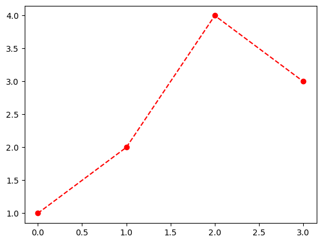
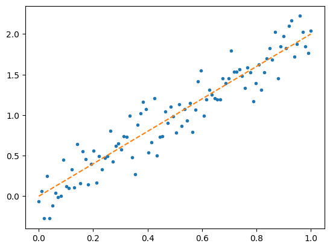
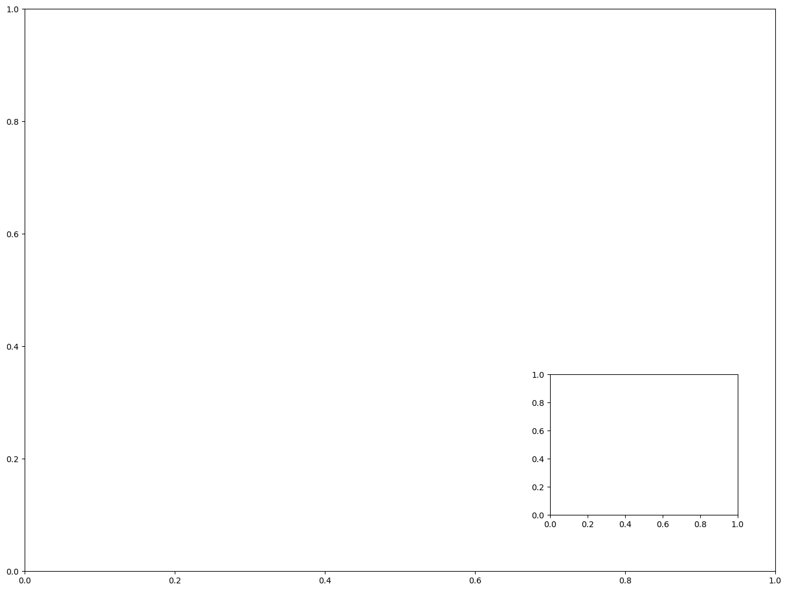
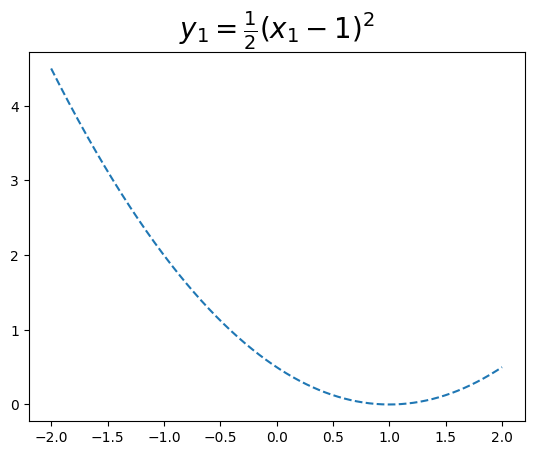

import matplotlib.pyplot as plt
import matplotlib as mplsupp-1: matplotlib
1. 강의영상
2. Imports
3. Matplotlib: 기본내용
A. line – 라인플랏
- 예시1: 기본플랏
plt.plot([1,2,3,2])- 예시2: 모양변경
plt.plot([1,2,3,2],'--')- 예시3: 색상변경 (1)
plt.plot([1,2,3,2],'r')- 예시4: 색상변경 (2)
plt.plot([1,2,3,2],'b')- 예시5: 모양+색상변경
plt.plot([1,2,3,2],'--r')- 예시6: 모양+색상변경의 순서변경 가능
plt.plot([1,2,3,2],'r--')
B. matplotlib에서의 문자열
- r--등의 옵션은 Markers + Line Styles + Colors 의 조합으로 표현가능
ref: https://matplotlib.org/stable/api/_as_gen/matplotlib.pyplot.plot.html
--r: 점선(dashed)스타일 + 빨간색r--: 빨간색 + 점선(dashed)스타일:k: 점선(dotted)스타일 + 검은색k:: 검은색 + 점선(dotted)스타일
- 우선 Marker를 무시하면 Line Styles + Color로 표현가능한 조합은 \(4\times 8=32\) 개
| character | description |
|---|---|
| ‘-’ | solid line style |
| ‘–’ | dashed line style |
| ‘-.’ | dash-dot line style |
| ‘:’ | dotted line style |
| character | color |
|---|---|
| ‘b’ | blue |
| ‘g’ | green |
| ‘r’ | red |
| ‘c’ | cyan |
| ‘m’ | magenta |
| ‘y’ | yellow |
| ‘k’ | black |
| ‘w’ | white |
| character | description |
|---|---|
| ‘.’ | point marker |
| ‘,’ | pixel marker |
| ‘o’ | circle marker |
| ‘v’ | triangle_down marker |
| ‘^’ | triangle_up marker |
| ‘<’ | triangle_left marker |
| ‘>’ | triangle_right marker |
| ‘1’ | tri_down marker |
| ‘2’ | tri_up marker |
| ‘3’ | tri_left marker |
| ‘4’ | tri_right marker |
| ‘8’ | octagon marker |
| ‘s’ | square marker |
| ‘p’ | pentagon marker |
| ‘P’ | plus (filled) marker |
| ’*’ | star marker |
| ‘h’ | hexagon1 marker |
| ‘H’ | hexagon2 marker |
| ‘+’ | plus marker |
| ‘x’ | x marker |
| ‘X’ | x (filled) marker |
| ‘D’ | diamond marker |
| ‘d’ | thin_diamond marker |
| ‘|’ | vline marker |
| ’_’ | hline marker |
- 예시1
plt.plot([1,2,4,3],'b-.')
- 예시2
plt.plot([1,2,4,3],'k:')
- 예시3: line style + color 조합으로 사용하든 color + line style 조합으로 사용하든 상관없음
plt.plot([1,2,4,3],'-.b')plt.plot([1,2,4,3],':k')- 예시4: line style을 중복으로 사용하거나 color를 중복으로 쓸 수 는 없다.
plt.plot([1,2,4,3],'br')ValueError: 'br' is not a valid format string (two color symbols)
- 예시5: 색이 사실 8개만 있는건 아니다.
ref: https://matplotlib.org/2.0.2/examples/color/named_colors.html
plt.plot([1,2,4,3],color='lime')- 예시6: 색을 바꾸려면 hex코드를 넣는 방법이 젤 깔끔함
ref: https://htmlcolorcodes.com/
plt.plot([1,2,4,3],color='#7E277E')- 예시7: 당연히 라인스타일도 4개만 있진 않음
ref: https://matplotlib.org/stable/gallery/lines_bars_and_markers/linestyles.html
plt.plot([1,2,4,3],linestyle=(0, (10, 1)))C. marker – 산점도
- 예시1: o 마커사용
plt.plot([1,2,4,3],'o')- 예시2: x 마커사용
plt.plot([1,2,4,3],'x')- 예시3: o 마커사용 + 색상 red
plt.plot([1,2,4,3],'or')- 예시3: d 마커사용 + 색상 blue
plt.plot([1,2,4,3],'db')- 예시4: x 마커사용 + 색상 blue
plt.plot([1,2,4,3],'bx')- 예시5: 마커와 라인스타일을 동시에 사용하면 dot-connected plot이 된다.
plt.plot([1,2,4,3],'--o')
- 예시6: dot-connected plot + 색상변경 (1)
plt.plot([1,2,4,3],'--or')
- 예시7: dot-connected plot + 색상변경 (2)
plt.plot([1,2,4,3],'--o',color='lime')아래는 동작하지 않음을 주의하라.
plt.plot([1,2,4,3],color='lime','--o')SyntaxError: positional argument follows keyword argument (4214878426.py, line 1)D. 겹쳐그리기
- 예시1
plt.plot([1,2,4,3])
plt.plot([3,4,1,2],'--o')- 예시2
plt.plot([1,2,4,3],color='C1')
plt.plot([3,4,1,2],'--o',color='C0')- 예시3
x=np.linspace(0,1,100)
eps = np.random.randn(100)*0.2
y= 2*x + eps
plt.plot(x,y,'.')
plt.plot(x,2*x,'--')
4. Matplotlib: fig, ax 의 개념 이해
A. fig 의 이해
# 예비학습1 – 그림을 저장했다가 꺼내보고 싶다.
- 그림을 그리고 저장하자.
plt.plot([1,2,4,3])
fig = plt.gcf()
- 다른그림을 그려보자.
plt.plot([1,2,4,3],'--o')
- 저장한 그림은 언제든지 꺼내볼 수 있음
fig#
# 예비학습2 – fig 는 뭐야?
#fig??
type(fig)matplotlib.figure.FigureFigure라는 클래스에서 찍힌 인스턴스
- 여러가지 값, 기능이 저장되어 있겠음.
fig.axes[<Axes: >]ax = fig.axes[0]yaxis= ax.yaxis
xaxis= ax.xaxislines = ax.get_lines()
line = lines[0]- 계층구조: Figure \(\supset\) [Axes,…] \(\supset\) YAxis, XAxis, [Line2D,…]
type(fig)matplotlib.figure.Figure1. .axes 로 Axes 를 끄집어냄
ax = fig.axes[0]
type(ax)matplotlib.axes._axes.Axes2. .xaxis, .yaxis 로 Axis 를 끄집어냄
yaxis = ax.yaxis
xaxis = ax.xaxis
type(yaxis), type(xaxis)(matplotlib.axis.YAxis, matplotlib.axis.XAxis)3. .get_lines()로 Line2D를 끄집어냄
lines = ax.get_lines()
line=lines[0]
type(line)matplotlib.lines.Line2D- 오브젝트내용 확인 (그닥 필요 없음)
line.properties()['data'](array([0., 1., 2., 3.]), array([1, 2, 4, 3]))- matplotlib의 설명
ref: https://matplotlib.org/stable/gallery/showcase/anatomy.html#sphx-glr-gallery-showcase-anatomy-py

B. plt.plot 쓰지 않고 그림그리기
- 개념:
- Figure(fig): 도화지
- Axes(ax): 도화지에 존재하는 그림틀
- Axis, Lines: 그림틀 위에 올려지는 물체(object)
- 목표: 아래와 똑같은 그림을 plt.plot()을 쓰지 않고 만든다.
plt.plot([1,2,3,2],'--o')
- 아래와 같이 하면 된다.
fig = plt.Figure()
ax = fig.add_axes([0.125, 0.11, 0.775, 0.77])
ax.set_xlim([-0.15, 3.15])
ax.set_ylim([0.9, 3.1])
line = mpl.lines.Line2D(
xdata=[0,1,2,3],
ydata=[1,2,3,2],
linestyle='--',
marker='o'
)
ax.add_line(line)
fig
Figure
fig = plt.Figure() - 클래스를 모른다면:
plt.Figure()는 도화지를 만드는 함수라 생각할 수 있음 - 클래스문법에 익숙하다면: 이 과정은 사실 클래스 -> 인스턴스의 과정임 (
plt라는 모듈안에Figure라는 클래스가 있는데, 그 클래스에서 인스턴스를 만드는 과정임)
fig<Figure size 640x480 with 0 Axes>- 아직은 아무것도 없음
Axes
ax = fig.add_axes([0.125, 0.11, 0.775, 0.77])fig.add_axes는 fig에 소속된 함수이며, 도화지에서 그림틀을 ‘추가하는’ 함수이다.
fig- 이제 fig라는 이름의 도화지에는 추가된 그림틀이 보인다.
Axes 조정
ax.set_xlim([-0.15, 3.15])
ax.set_ylim([0.9, 3.1])(0.9, 3.1)figLines
line = mpl.lines.Line2D(
xdata=[0,1,2,3],
ydata=[1,2,3,2],
linestyle='--',
marker='o'
)ax.add_line(line)fig
fig
다른방법들
- 조금 다른 방법: Line2d 오브젝트를 쓰지 않는 방법
fig = plt.Figure()
ax = fig.add_axes([0.125, 0.11, 0.775, 0.77])
ax.plot([1,2,3,2],'--o')
fig- 조금 다른 방법 (2): add_axes()를 쓰지 않는 방법
fig = plt.Figure()
ax = fig.subplots(1)
ax.plot([1,2,3,2],'--o')
fig
- 좀 더 다른 방법 (3)
fig, ax = plt.subplots(1)
ax.plot([1,2,3,2],'--o')
C. 정리 (\(\star\star\star\))
- 결국 아래는 모두 같은 코드이다.
## 코드1
plt.plot([1,2,3,2],'--o')
## 코드2
fig,ax = plt.subplots()
ax.plot([1,2,3,2],'--o')
## 코드3
fig = plt.Figure()
ax = fig.subplots()
ax.plot([1,2,3,2],'--o')
fig
## 코드4
fig = plt.Figure()
ax = fig.add_axes([0.125, 0.11, 0.775, 0.77])
ax.plot([1,2,3,2],'--o')
fig
## 코드5
fig = plt.Figure()
ax = fig.add_axes([0.125, 0.11, 0.775, 0.77])
ax.set_xlim([-0.15, 3.15])
ax.set_ylim([0.9, 3.1])
line = mpl.lines.Line2D(
xdata=[0,1,2,3],
ydata=[1,2,3,2],
linestyle='--',
marker='o'
)
ax.add_line(line)
fig
D. 미니맵
- 틀잡기
fig = plt.Figure()
ax = fig.add_axes([0,0,2,2])
ax_mini = fig.add_axes([1.4,0.2,0.5,0.5])
fig
ax.plot([1,5,3,4],'--o')
ax_mini.plot([1,2,3,1],'--or')
fig5. Matplotlib: subplots
A. plt.subplots
- 예시1: plt.subplots 로 (2,1) subplots 생성
# fig, axs = plt.subplots(2)
fig, (ax1,ax2) = plt.subplots(2,figsize=(4,4))
ax1.plot([1,2,3,2],'--r')
ax2.plot([1,2,4,3],'--o')
fig.tight_layout()
# plt.tight_layout()- 예시2: plt.subplots 로 (2,2) subplots 생성
fig, ((ax1,ax2),(ax3,ax4)) = plt.subplots(2,2, figsize=(4,4))
ax1.plot([1,2,4,3],'o', color='C0')
ax2.plot([1,2,4,3],'o', color='C1')
ax3.plot([1,2,4,3],'o', color='C2')
ax4.plot([1,2,4,3],'o', color='C3')
fig.tight_layout()B. plt.subplot \(\times\) n
- 예시3: plt.subplot 4번써서 (2,2) subplots 만들기
plt.figure(figsize=(4,4))
plt.subplot(2,2,1)
plt.plot([1,2,4,3],'o', color='C0')
plt.subplot(2,2,2)
plt.plot([1,2,4,3],'o', color='C1')
plt.subplot(2,2,3)
plt.plot([1,2,4,3],'o', color='C2')
plt.subplot(2,2,4)
plt.plot([1,2,4,3],'o', color='C3')
plt.tight_layout()
- 예시4: plt.subplot 의 희한한 활용
plt.figure(figsize=(4,4))
plt.subplot(2,2,1)
plt.plot([1,2,4,3],'o', color='C0')
plt.subplot(2,2,2)
plt.plot([1,2,4,3],'o', color='C1')
plt.subplot(2,1,2)
plt.plot([1,2,4,3],'o', color='C2')
plt.tight_layout()6. Matplotlib: 미세하지만 유용한 팁
A. 그림만 보고 싶을때
plt.plot([1,2,3,4],[2,3,4,5]);B. marker size, line width
plt.plot([1,2,3,4],[2,3,4,2],'o',ms=10)plt.plot([1,2,3,4],[2,3,4,5],'--',lw=10)C. label + legend
plt.plot([1,2,3,4],[1,2,3,2],'--o',label='A')
plt.plot([1,2,3,4],[3,2.1,1,3],'--o',label='B')
plt.legend()D. 색깔조정 (C0,C1,…)
plt.plot([1,2,3,4],[1,2,3,2],'--o',label='A',color='C1')
plt.plot([1,2,3,4],[3,2.1,1,3],'--o',label='B',color='C0')
plt.legend()E. title 설정
- (방법1)
plt.plot([1,2,3,4],[1,2,3,2],'--o',label='A',color='C1')
plt.plot([1,2,3,4],[3,2.1,1,3],'--o',label='B',color='C0')
plt.legend()
plt.title('title')Text(0.5, 1.0, 'title')
- (방법2)
fig, ax = plt.subplots()
ax.plot([1,2,3,4],[1,2,3,2],'--o',label='A',color='C1')
ax.plot([1,2,3,4],[3,2.1,1,3],'--o',label='B',color='C0')
ax.legend()
ax.set_title('title')Text(0.5, 1.0, 'title')F. suptitle 설정
fig, ax = plt.subplots(2,2)
ax[0,0].plot([1,2,3,2],'--o',label='A',color='C0')
ax[0,0].set_title('(a)')
ax[0,1].plot([3,2.1,1,3],'--o',label='B',color='C1')
ax[0,1].set_title('(b)')
ax[1,0].plot([-3,-2.1,-1,-3],'--o',label='B',color='C2')
ax[1,0].set_title('(c)')
ax[1,1].plot([3,-2.1,1,-3],'--o',label='B',color='C3')
ax[1,1].set_title('(d)')
#plt.suptitle('suptitle')
fig.suptitle('suptitle')Text(0.5, 0.98, 'suptitle')
G. tight_layout()
figfig.tight_layout()fig
H. fig, ax, plt 소속
- 일단 그림 하나 그리고 이야기좀 해보자.
fig, ax = plt.subplots()
ax.plot([1,2,3,1])- fig에는 있고 ax에는 없는 것
add_axes, tight_layout, suptitle, …
- ax에는 있고 fig에는 없는 것
boxplot, hist, plot, set_title, …
- plt는 대부분 다 있음. (의미상 명확한건 대충 알아서 fig, ax에 접근해서 처리해준다) - plt.tight_layout, plt.suptitle, plt.boxplot, plt.hist, plot.plot - plt.set_title 은 없지만 plt.title 은 있음 - plt.add_axes 는 없음..
I. x축, y축 label 설정
ax.xaxis.set_label_text('xlabel',size=16,family='serif',weight=1000,style='italic')
#_fontsettings={'size':16,'family':'serif','weight'=1000,'style':'italic'}
#ax.xaxis.set_label_text('xlabel',_fontsettings)
fig폰트ref - size: - fontweight: 0~1000 - family: ‘serif’, ‘sans-serif’, ‘monospace’ - style: ‘normal’, ‘italic’
ax.set_ylabel('ylabel',size=16)
figJ. Latex
- 예시1
import numpy as np
import matplotlib.pyplot as pltx1= np.linspace(-2,2,1000)
y1= (x1-1)**2
fig, ax = plt.subplots()
ax.plot(x1,y1,'--')
ax.set_title('$y_1=(x_1-1)^2$')Text(0.5, 1.0, '$y_1=(x_1-1)^2$')- 예시2
x1 = np.linspace(-2,2,1000)
y1 = 0.5*(x1-1)**2
fig, ax = plt.subplots()
ax.plot(x1,y1,'--')
ax.set_title(r'$y_1=\frac{1}{2}(x_1-1)^2$',size=20);
- 예시3
x1 = np.linspace(-2,2,1000)
y1 = 0.5*(x1-1)**2
fig, ax = plt.subplots()
ax.plot(x1,y1,'--')
ax.set_title(r'$y_1=\frac{1}{2}(x_1-1)^2$',size=20)
ax.set_xlabel(r'$x_1$',size=15)
ax.set_ylabel(r'$y_1$',size=15);- 예시4
x1 = np.linspace(-2,2,1000)
y1 = 0.5*(x1-1)**2
y2 = 0.5*(x1+1)**2
fig, ax = plt.subplots()
ax.plot(x1,y1,'--',label=r'$\frac{1}{2}(x-1)^2$')
ax.plot(x1,y2,'--',label=r'$\frac{1}{2}(x+1)^2$')
ax.legend()K. plt.subplot()을 활용한 액시즈 변경
- 예시1: 기본액시즈 – 이건 우리가 아는건데?
ax = plt.subplot(111,projection=None)
ax.plot([1,2,3,4],[1,2,4,3])- 예시2: 3d 액시즈
ax = plt.subplot(111,projection='3d')
ax.plot([1,2,3,4],[1,2,-3,4],[1,2,-3,-4],'--o')
fig=plt.gcf()
fig.set_figheight(12)- 예시3: polar 액시즈
ax=plt.subplot(111,projection='polar')
r = np.linspace(0,5,100)
theta = np.linspace(0,2*np.pi,100)
ax.plot(theta,r)